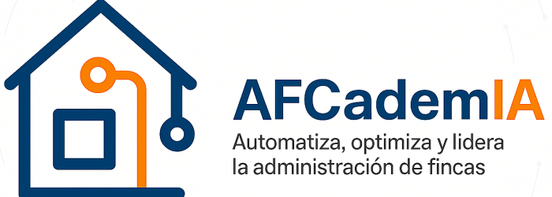

Plazas limitadas — reserva la tuya cuanto antes y descubre cómo la IA y la automatización pueden ayudarte a gestionar más comunidades con menos esfuerzo.
Reservar mi plazaRellena el formulario y recibirás el enlace de acceso por WhatsApp.